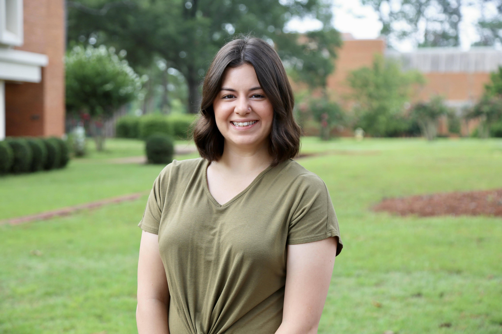

Krystal Morris

Objective
Highly motivated, enthusiastic IT professional with a broad range of knowledge in human-computer
interaction and information technology expertise. An effective team lead with over 5 years of experience.
Passionate and driven to learn and expand my creative expertise focused around web development!
Client focused with a strong emphasis on relationship building with the client to deliver
the most high quality end product possible.
Education
May 2022
Bachelor of Science in IT (BSIT) - Business Concentration, Georgia Southwestern State University
- Graduating GPA: 3.73 - Magna Cum Laude
- Upsilon Pi Epsilon President
- President's List - 3 semesters; Dean's List - 5 semesters
- Network Support Intern
Work Experience
JULY 2017 – JUNE 2022
TEAM TRAINER/SUBJECT MATTER EXPERT, CHICK-FIL-A
- Led team training for all new hires by utilizing Pathway training software
- Developed and implemented training plans, goals, and organization metrics
- Conducted quality assessment checks of team member responsibilities and food safety
JULY 2022 – PRESENT
NETWORK TECHNICIAN, GEORGIA SOUTHWESTERN STATE UNIVERSITY - IIT
- Manage coordination and communication with staff pertaining to network upgrades
- Conduct configuration and updates of Aruba switches and various network software
- Utilization of ticketing system to manage, resolve, and troubleshoot issues
- Troubleshoot and provide quality faculty, staff, and student technical/network support
- Coordinated with System Administrator and Information Security Officer to develop
cybersecurity policy and conduct system wide security evaluations
Skills
- Languages: HTML, CSS, C#, PHP
- Database: MySQL, MAMP, PHP MyAdmin
- Visual Studio, Visual Code
- ClearPass Policy Manager
- Microsoft Azure/SCCM
- Leadership, Team Project Management, Interpersonal Relations
- Operations Systems: Windows, Unix, iOS, Linux, Cisco Switch Interface
- Hardware installation/configuration
My Hobbies!
Contact Me